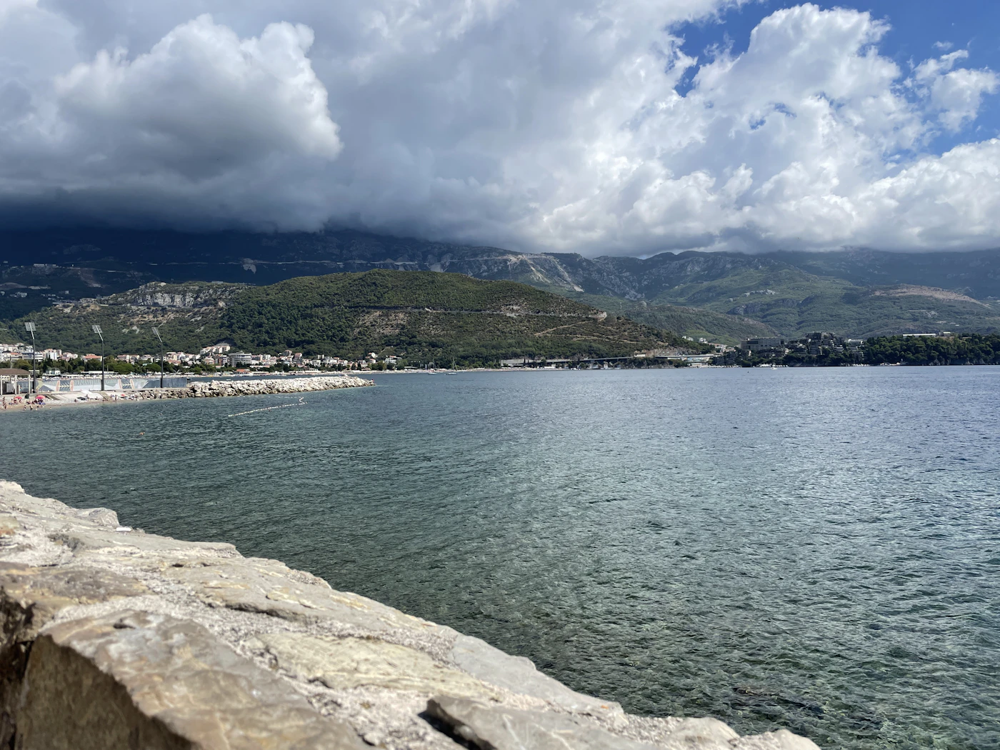
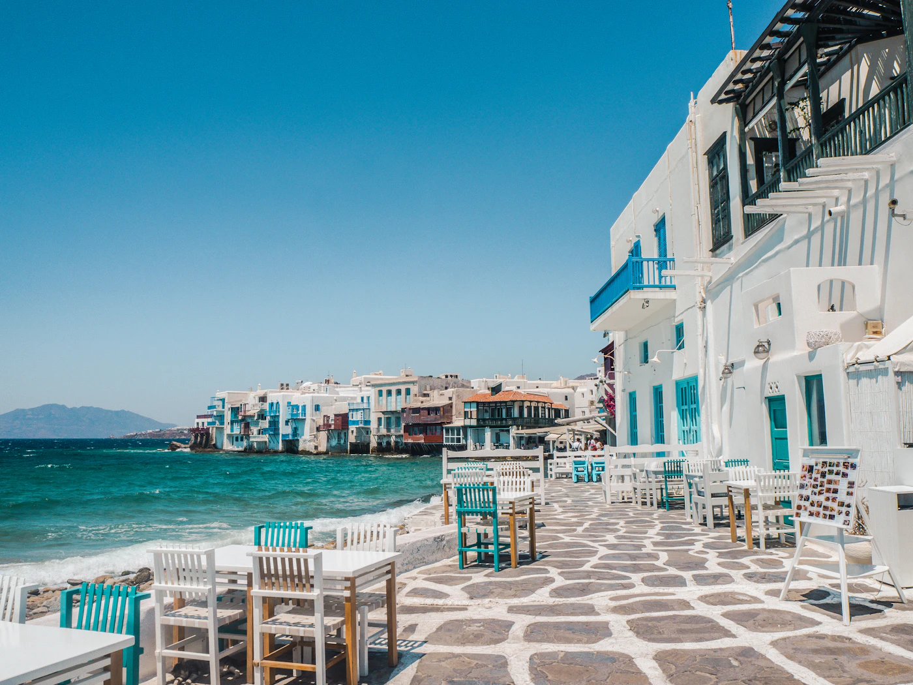

Vodiči / Budva
Budva i crnogorsko primorje — avion ili autobus

Kad ići u Budvu — najbolje vreme za more i manje gužve
Sezona kupanja traje od sredine juna do sredine septembra, sa vrhuncem gužve (i cena) u julu i avgustu. Maj, jun i septembar/oktobar su tiši i jeftiniji izbor, more je već (ili još) toplo dovoljno za kupanje krajem maja i u septembru, dok je gradska šetnja po Starom gradu prijatnija bez vrućine.
Avion ili autobus do Budve — šta se više isplati
Budva nema svoj aerodrom — najbliži je Tivat (TIV), oko 25 minuta vožnje, sa sezonskim letovima; Podgorica (TGD) je alternativa kad Tivat nema direktnu liniju, oko 1h vožnje do Budve. Za manje grupe i kraće izlete, direktan autobus iz Srbije (npr. Lasta, FlixBus, Ekol) je često realnija i jeftinija opcija: put traje oko 7h, a procena cene je oko 26€ po osobi u jednom pravcu — SKLOPI ovo automatski pokazuje kao alternativu kad pretražuješ ovu destinaciju, pošto za bliske regionalne destinacije let često nije očigledno jeftiniji.
Koliko košta odmor u Budvi — orijentacione cene
- Ležaljka i suncobran na uređenim plažama — od 10–15€ po ležaljci dnevno u julu/avgustu, jeftinije van sezone.
- Obrok u konobi u Starom gradu — 15–22€ po osobi za ribu/školjke, dok su mesta u Petrovcu i Rafailovićima obično 20–30% jeftinija za sličan kvalitet.
- Izlet brodom do Svetog Stefana ili Plave pećine — od 20–35€ po osobi, zavisno od trajanja i broja stanica.
- Autobus Budva–Kotor — oko 3–4€ po osobi, oko 40 minuta vožnje.
Šta obavezno vidi na crnogorskom primorju
- Stari grad Budva — kompaktan, obiđe se pešice za pola dana, najbolji ujutru pre gužve i uveče kad se ohladi.
- Sveti Stefan — poluostrvo-hotel koje se gleda spolja (privatan kompleks), plaža ispred je javna i popularna za fotografije.
- Petrovac — mirnija plaža/mesto, dobar izlet iz Budve na pola dana.
- Kotorski zaliv — Kotor i Perast su blizu (do sat vožnje), vredno kombinovati u istom izletu ako imaš auto ili organizovan transfer.

Gde jesti u Budvi — lokalna hrana sa primorja
Za autentičnije i jeftinije obroke, izbegavaj restorane odmah uz šetalište u Starom gradu i pomeri se par ulica dublje ili do Petrovca. Obavezno probaj: crnogorski pršut i sir iz Njeguša, sveže školjke (dagnje na buzaru), lignje na žaru i kačamak ako ideš i u unutrašnjost. Konobe u Rafailovićima i Petrovcu su generalno jeftinije od onih u samom centru Budve, uz sličan ili bolji kvalitet ribe.
Skrivene lokacije na crnogorskom primorju van glavnih ruta
- Plaža Jaz — veća, manje pretrpana plaža blizu Budve, popularna kod lokalaca, sa mestom za kampovanje u blizini.
- Perast — mirno mestašce u Kotorskom zalivu, sa ostrvom Gospa od Škrpjela do kog se stiže brodom za par minuta — manje gužve nego u samom Kotoru.
- Rezevići i Buljarica — divlje, manje uređene plaže između Budve i Petrovca, dobar izbor ako tražiš mir bez ležaljki.
- Stara maslina u Baru — jedna od najstarijih maslina u Evropi, dobar usputni izlet ako produžiš južnije od Budve.
Praktični saveti pre rezervacije
- Dokumenta — Crna Gora nije u EU/Šengenu; za većinu državljana regiona dovoljna je lična karta, ali proveri uslov za svoje državljanstvo pre puta.
- Auto — korisno u sezoni ako planiraš i Kotor/Perast/Sveti Stefan u istom izletu; parking u samom Starom gradu Budve je ograničen.
- Sezonske cene — smeštaj u julu/avgustu ume da poskupi nekoliko puta u odnosu na maj/jun — vredi provizuriti oba termina u builderu pre nego što odlučiš.
Isplaniraj put do Budve na SKLOPI →